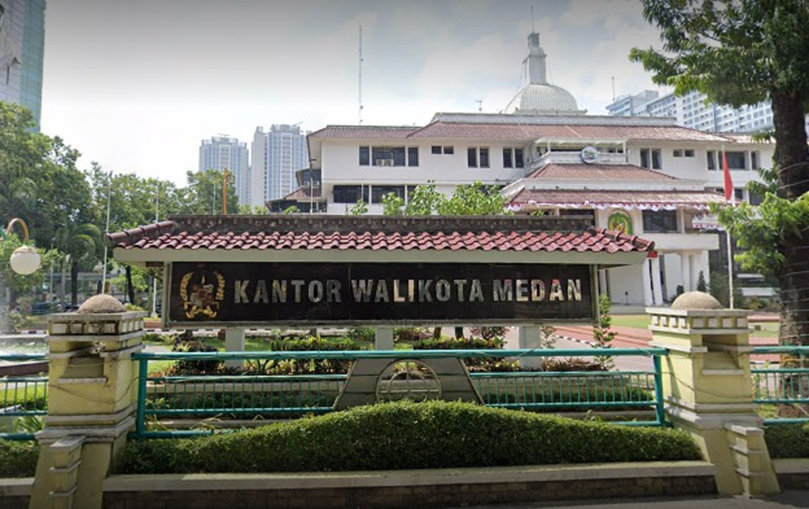
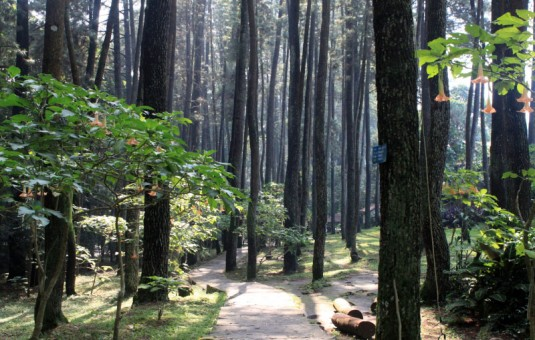
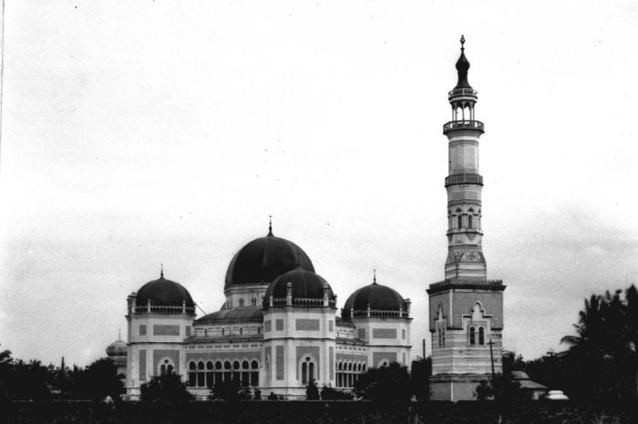

Sejarah

Sejarah Medan berawal dari sebuah kampung yang didirikan oleh Guru Patimpus di pertemuan Sungai Deli dan Sungai Babura. Hari jadi Kota Medan ditetapkan pada 1 Juli 1590. Selanjutnya pada tahun 1632, Medan dijadikan pusat
pemerintahan Kesultanan Deli, sebuah kerajaan Melayu. Bangsa Eropa mulai menemukan Medan sejak kedatangan John Anderson dari Inggris pada tahun 1823. Peradaban di Medan terus berkembang hingga Pemerintah Hindia Belanda
memberikan status kota pada 1 April 1909 dan menjadikannya pusat pemerintahan Karesidenan Sumatra Timur. Memasuki abad ke-20, Medan menjadi kota yang penting di luar Jawa, terutama setelah pemerintah kolonial membuka perusahaan
perkebunan secara besar-besaran
Menurut Bappenas, Medan adalah salah satu dari empat pusat pertumbuhan utama di Indonesia, bersama dengan Jakarta, Surabaya, dan Makassar.[8][9] Medan adalah kota multietnis yang penduduknya terdiri dari orang-orang dengan latar
belakang budaya dan agama yang berbeda-beda. Selain Melayu dan Karo sebagai penghuni awal, Medan didominasi oleh etnis Jawa, Batak, Tionghoa, Minangkabau, Mandailing, dan India. Mayoritas penduduk Medan bekerja di sektor
perdagangan, sehingga banyak ditemukan ruko di berbagai sudut kota. Di samping kantor-kantor pemerintah provinsi, di Medan juga terdapat kantor-kantor konsulat dari berbagai negara seperti Amerika Serikat, Jepang, Malaysia, dan
Jerman.
Geografis

Kota Medan memiliki luas 26.510 hektare (265,10 km²) atau 3,6% dari keseluruhan wilayah Sumatra Utara. Dengan demikian, dibandingkan dengan kota/kabupaten lainya, Medan memiliki luas wilayah yang relatif kecil dengan jumlah
penduduk yang relatif besar. Secara geografis kota Medan terletak pada 3° 30' – 3° 43' Lintang Utara dan 98° 35'–98° 44' Bujur Timur. Untuk itu topografi kota Medan cenderung miring ke utara dan berada pada ketinggian 2,5–37,5
meter di atas permukaan laut.
Kabupaten Deli Serdang merupakan salah satu daerah yang kaya dengan sumber daya alam (SDA), khususnya di bidang perkebunan dan kehutanan. Karena secara geografis Medan didukung oleh daerah-daerah yang kaya sumber daya alam,
seperti Deli Serdang, Labuhan Batu, Simalungun, Tapanuli Utara, Tapanuli Selatan, Mandailing Natal, Karo, Binjai, dan lain-lain. Kondisi ini menjadikan kota Medan secara ekonomi mampu mengembangkan berbagai kerjasama dan
kemitraan yang sejajar, saling menguntungkan, saling memperkuat dengan daerah-daerah sekitarnya. Di samping itu sebagai daerah pinggiran jalur pelayaran Selat Malaka, Medan memiliki posisi strategis sebagai gerbang (pintu masuk)
kegiatan perdagangan barang dan jasa, baik perdagangan domestik maupun luar negeri (ekspor-impor). Posisi geografis Medan ini telah mendorong perkembangan kota dalam dua kutub pertumbuhan secara fisik, yaitu daerah Belawan dan
pusat Kota Medan saat ini.
Wisata
Ada banyak bangunan-bangunan tua di Medan yang masih menyisakan arsitektur khas Belanda. Contohnya: Gedung Balai Kota lama, Kantor Pos Medan, Menara Air Tirtanadi (yang merupakan ikon kota Medan), Titi Gantung–sebuah jembatan di
atas rel kereta api, Kantor Pos, Bank Indonesia, Gedung London Sumatra dan Bangunan tua di daerah Kesawan. Selain itu, masih ada beberapa bangunan bersejarah, antara lain Istana Maimun, Masjid Raya Medan, Masjid Raya Al Osmani
dan juga rumah Tjong A Fie di kawasan Jalan Jend. Ahmad Yani (Kesawan).
Daerah Kesawan masih menyisakan bangunan-bangunan tua, seperti bangunan PT London Sumatra, dan ruko-ruko tua seperti yang bisa ditemukan di Penang, Malaysia dan Singapura. Ruko-ruko ini, kini telah disulap menjadi sebuah pusat
jajanan makan yang ramai pada malam harinya. Saat ini Pemerintah Kota merencanakan Medan sebagai Kota Pusat Perbelanjaan dan Makanan. Diharapkan dengan adanya program ini menambah arus kunjungan dan lama tinggal wisatawan ke
kota ini.
Masjid Raya Medan

Masjid Raya Medan atau Masjid Raya Al-Mashunerupakan sebuah masjid yang terletak di Kota Medan, Indonesia. Masjid ini dibangun pada tahun 1906 dan selesai pada tahun 1909. Pada awal pendiriannya, masjid ini menyatu dengan
kompleks istana. Gaya arsitekturnya khas Timur Tengah, India dan Spanyol. Masjid ini berbentuk segi delapan dan memiliki sayap pada bagian selatan, timur, utara, dan barat. Masjid Raya Medan ini merupakan saksi sejarah
peradaban Melayu Deli, yang memiliki keterkaitan erat dengan Kesultanan Deli.
Istana Maimun

Istana Maimun adalah istana Kesultanan Deli yang merupakan salah satu ikon Kota Medan, Sumatra Utara. Istana ini terletak di Jalan Brigadir Jenderal Katamso, Aur, Medan Maimun
Istana Maimun didesain oleh arsitek Capt. Theodoor van Erp, seorang tentara Kerajaan Belanda yang dibangun atas perintah Sultan Deli, Sultan Ma'moen Al Rasyid.[3] Pembangunan istana ini dimulai dari 26 Agustus 1888 dan selesai
pada 18 Mei 1891. Istana Maimun memiliki luas sebesar 2.772 m2 dan 30 ruangan.[1] Istana Maimun terdiri dari 2 lantai dan memiliki 3 bagian yaitu bangunan induk, bangunan sayap kiri dan bangunan sayap kanan. Bangunan istana
ini menghadap ke Timur dan pada sisi depan terdapat bangunan Masjid Al-Mashun atau yang lebih dikenal dengan sebutan Masjid Raya Medan.